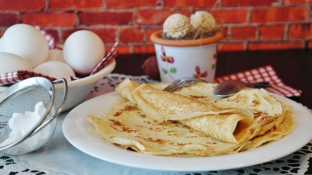

Pancake Recipe

Description
This is a recipe of homemade pancake, a simple, light and airy savoury dish for nights and evenings when you want something special and delicious, but doesn't want to cook an elaborate meal. Can be eaten with fillings, or just the fried dough. It goes very well with sliced ham and cheese, or minced meat. Serves two people comfortably.
Ingredients
- 1 glass and a half of milk.
- 1 cup of sifted wheat flour.
- 3 eggs.
- 1 spoon of butter.
- 1 spoon of oil.
- Salt according to taste.
Steps
- Heat the butter until it becomes liquid.
- Mix all ingredients together, until the texture of the dough is smooth, with no apparent lumps.
- Pre-heat a frying pan with enough oil in it to cover its surface.
- With a ladle, scoop some of the dough and put it into the frying pan.
- When one of the sides is done to your taste, use a spoon or flip it over, so the other side can be done.
- Fill the pancakes (or not) according to your taste. They are ready to eat.
Return to main page